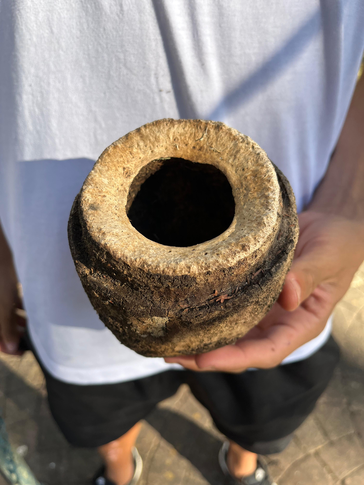

Sapucaia
Lecythis pisonis

Informações Botânicas
Nome Científico:
Lecythis pisonis
Família:
Lecythidaceae
Origem:
Brasil (da Mata Atlântica, do Ceará ao Rio de Janeiro)
Descrição:
Árvore de grande porte, que pode atingir de 20 a 30 metros de altura, perdendo suas folhas em uma determinada época do ano (decídua). A troca de folhas é um espetáculo, com as novas brotando em tons de rosa e lilás. Seu fruto é uma grande "cumbuca" de madeira com uma tampa, que se abre para liberar as sementes (as castanhas-de-sapucaia), que são comestíveis, muito saborosas e apreciadas pela fauna.
Características Especiais:
- Fruto Marmita-de-Macaco: Seu fruto lenhoso tem uma tampa que se abre sozinha para liberar as sementes.
- Castanhas Saborosas: Suas sementes (castanhas) são comestíveis e muito apreciadas.
- Folhas Novas Coloridas: A troca de folhas é um espetáculo, com as novas brotando em tons de rosa e lilás.
- Madeira Resistente: Sua madeira é dura, pesada e de grande durabilidade.